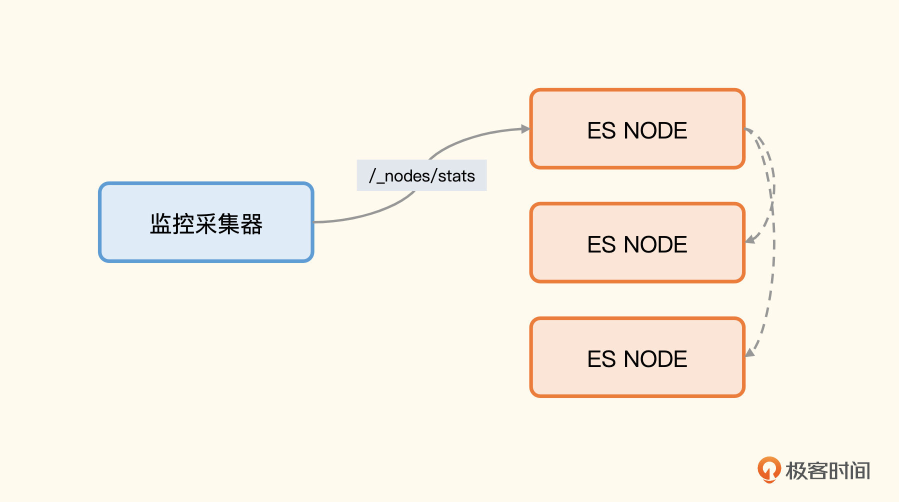
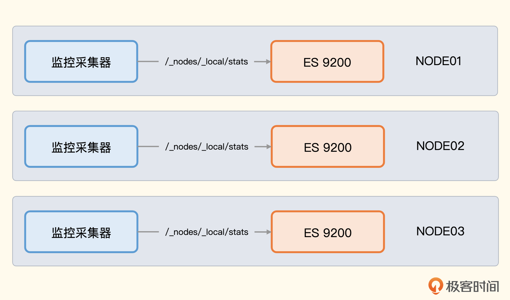
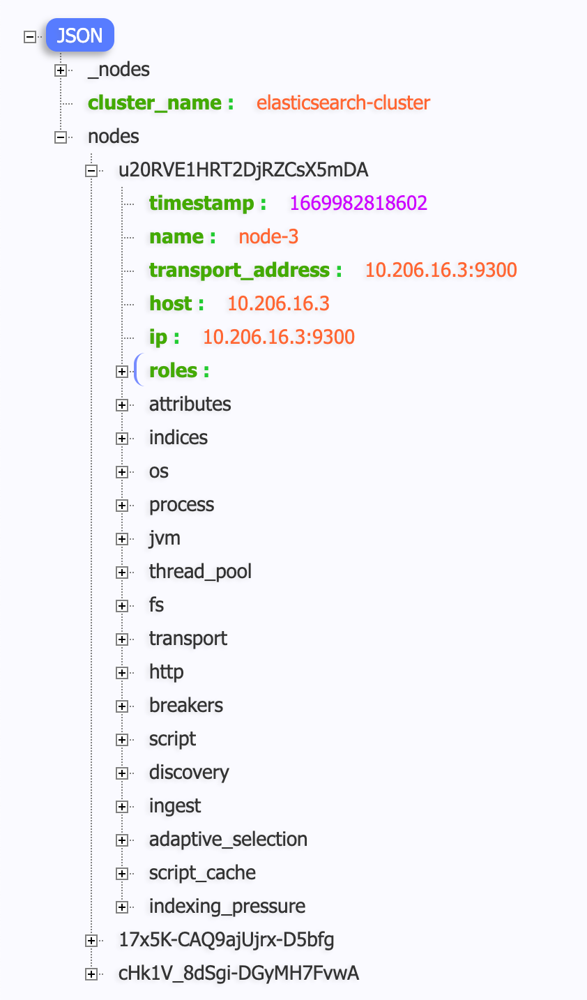
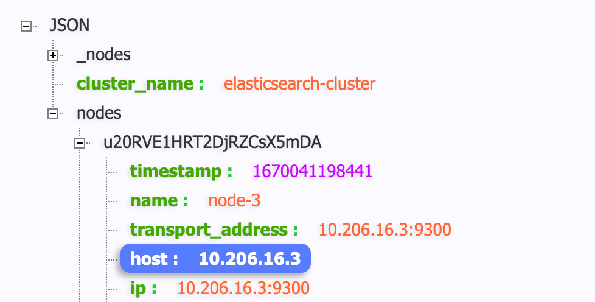

Elasticsearch
Kafka 是 Java 组件，主要使用 JMX 的方式采集指标。另一个Java组件：Elasticsearch（简称 ES ），Elasticsearch直接通过 HTTP 接口暴露指标，相比 Kafka 真是简单太多了。
Elasticsearch 的监控同样包含多个方面，操作系统、JVM 层面的关注点和 Kafka 是一样的，这里不再赘述。我们重点关注 Elasticsearch 本身的指标，它自身的指标有很多，哪些相对更关键呢？这就要从 Elasticsearch 的职能和架构说起了。
Elasticsearch 的职能和架构
Elasticsearch 的核心职能就是对外提供搜索服务，所以 搜索请求的吞吐和延迟 是非常关键的，搜索是靠底层的索引实现的，所以 索引的性能指标 也非常关键，Elasticsearch 由一个或多个节点组成集群， 集群自身是否健康 也是需要我们监控的。
ElasticSearch 的架构非常简单，一个节点就可以对外提供服务，不过单点的集群显然有容灾问题，如果挂掉了就万事皆休了。一般生产环境，至少搭建一个三节点的集群。
三个节点分别部署三个 Elasticsearch 进程，这三个进程把 cluster.name 都设置成相同的值，就可以组成一个集群。Elasticsearch 会自动选出一个 master 节点，负责管理集群范围内所有的变更，整个选主过程是自动的，不用我们操心。
架构图里绿色的 P0、P1、P2 表示三个分片，R0、R1、R2 代表分片副本，每个分片有两个副本，也就是说 P0 对应两个 R0，P1 对应两个 R1，P2 对应两个 R2。这些分片和副本是否成功分配到 Node 上并落盘写入，也是一个重要的监控指标。
我们知道 Elasticsearch 哪些方面的指标比较关键了，下面再来看一下这些指标是怎么获取的。
Elasticsearch 暴露指标的方式
Elasticsearch 通过 HTTP 接口方式暴露指标，集群整体的健康状况使用 /_cluster/health 获取，我这里使用 curl 测试一下。
ulric@localhost ~ % curl -s -uelastic:Pass1234 'http://10.206.16.3:9200/_cluster/health?pretty'
{
"cluster_name" : "elasticsearch-cluster",
"status" : "green",
"timed_out" : false,
"number_of_nodes" : 3,
"number_of_data_nodes" : 3,
"active_primary_shards" : 216,
"active_shards" : 432,
"relocating_shards" : 0,
"initializing_shards" : 0,
"unassigned_shards" : 0,
"delayed_unassigned_shards" : 0,
"number_of_pending_tasks" : 0,
"number_of_in_flight_fetch" : 0,
"task_max_waiting_in_queue_millis" : 0,
"active_shards_percent_as_number" : 100.0
}
这里最关键的信息是 status 字段，我的集群是 green，表示主分片和副本分片都处于正常状态；如果 status 是 yellow，表示主分片处于正常状态，但副本分片有异常状态；如果 status 是 red，则表示有主分片是异常状态。
其他字段大都是集群统计数据，比如 number_of_nodes 表示集群共有 3 个节点，number_of_data_nodes 表示集群共有 3 个数据节点，active_primary_shards 表示共有 216 个活跃主分区，active_shards 表示共有 432 个活跃分区。
注意，在集群正常的情况下，对集群里的所有节点请求这个接口，都会返回相同的信息，所以要获取集群健康状况只需要请求某一个节点即可，或者都请求一下也没啥大不了的，数据量也不大。
除了 /_cluster/health 之外，其他常见的接口还有 /_cluster/health?level=indices、 /_nodes/stats、 /_nodes/_local/stats、 /_cluster/stats、 /_all/_stats，其中最有用的是 **获取节点统计数据的接口**，下面我们重点介绍一下。
获取节点统计信息
获取节点统计信息可以使用两个接口， /_nodes/stats 会返回集群中所有节点的信息， /_nodes/_local/stats 则只返回请求的那个节点的信息。
这样的设计，从监控角度就有两种采集方式，一种是在中心部署监控采集器，连上某一台 Elasticsearch 节点，从这个节点获取所有其他节点的信息，你可以看一下架构图。

另一种方式，是把监控采集器部署在所有节点上，调用各自节点上 ES 进程的 local 接口，你可以看一下架构图。

/_nodes/stats 接口返回的内容非常丰富，我们看一个样例。

nodes 字段是个大 map，map 的 key 是 node_id，map 的 value 就是各类统计指标，其中最关键的是 **indices**，也就是索引相关的。除此之外，还有 os 操作系统相关的、process 进程相关的、jvm 相关的、thread_pool 线程池相关的、fs 文件系统相关的、transport 网络吞吐相关的、http 各个接口请求相关的各类指标。我们可以通过在 URL 中传参的方式告诉 ES 只返回某些特定数据，比如：
/_nodes/stats/indices,os
这种接口调用方式，只会返回索引和操作系统相关的指标。这个接口返回的内容非常关键，下面我来挑选一些关键信息为你解读一下。
节点统计信息解读
索引部分是最关键的，我们先来看索引部分。
"indices": {
"docs": {
"count": 45339548,
"deleted": 2
},
"shard_stats": {
"total_count": 144
},
"store": {
"size_in_bytes": 15882899598,
"total_data_set_size_in_bytes": 15882899598,
"reserved_in_bytes": 0
},
- docs 统计了文档的数量，包括还没有从段（segments）里清除的已删除文档数量。
- shard_stats 统计了分片的数量。
- store 统计了存储的情况，包括主分片和副本分片总共耗费了多少物理存储。
indexing、get、search、merges、refresh、flush 等，都是类似的，统计了 Elasticsearch 各个关键环节的吞吐和耗时，其中比较关键的是 indexing、search、merge，下面是我的数据样例。
"indexing": {
"index_total": 18595844,
"index_time_in_millis": 1868991,
"index_current": 0,
"index_failed": 0,
"delete_total": 0,
"delete_time_in_millis": 0,
"delete_current": 0,
"noop_update_total": 0,
"is_throttled": false,
"throttle_time_in_millis": 0
},
"search": {
"open_contexts": 0,
"query_total": 140847,
"query_time_in_millis": 59976,
"query_current": 0,
"fetch_total": 1333,
"fetch_time_in_millis": 990,
"fetch_current": 0,
"scroll_total": 3,
"scroll_time_in_millis": 86,
"scroll_current": 0,
"suggest_total": 0,
"suggest_time_in_millis": 0,
"suggest_current": 0
},
"merges": {
"current": 0,
"current_docs": 0,
"current_size_in_bytes": 0,
"total": 64937,
"total_time_in_millis": 7170896,
"total_docs": 1341992706,
"total_size_in_bytes": 140455785325,
"total_stopped_time_in_millis": 0,
"total_throttled_time_in_millis": 160061,
"total_auto_throttle_in_bytes": 6707112372
},
indexing 是统计索引过程，ES 的架构里，索引是非常关键的一个东西，索引的吞吐和耗时都应该密切关注，index_total 和 index_time_in_millis 都是 Counter 类型的指标，单调递增。如果要求取最近一分钟的索引数量和平均延迟，就需要使用 increase 函数求增量。throttle_time_in_millis 表示受限的时间，索引不能耗费太多资源，如果占用了太多资源就影响其他的操作，应该限制一下，这个指标就表示总计被限制的时间。
search 描述在活跃中的搜索（open_contexts）数量、查询的总数量，以及自节点启动以来在查询上消耗的总时间。用 increase(query_time_in_millis[1m]) / increase(query_total[1m]) 计算出来的比值，可以用来粗略地评价你的查询有多高效。比值越大，每个查询花费的时间越多，到一定程度就要考虑调优了。
fetch 统计值展示了查询处理的后一半流程，也就是query-then-fetch 里的 fetch部分。如果 fetch 耗时比 query 还多，说明磁盘较慢，可能是获取了太多文档，或者搜索请求设置了太大的分页。
merges 包括了 Lucene 段合并相关的信息。它会告诉你目前在运行几个合并，合并涉及的文档数量，正在合并的段的总大小，以及在合并操作上消耗的总时间。合并要消耗大量的磁盘 I/O 和 CPU 资源，如果 merge 操作耗费太多资源，也会被限制，即 total_throttled_time_in_millis 指标。
除了索引信息之外， 还直接在 HTTP 接口中暴露了操作系统、进程、JVM相关的指标，下面我们也简单看一下。
操作系统层面的指标，我们既可以使用 Elasticsearch 自己暴露的数据，也可以使用监控采集器直接采集的数据，比如 Categraf 默认会采集 CPU、内存、磁盘、IO、网络、进程等多种信息。这里要解决的关键问题是， 如何通过相同的大盘变量过滤Elasticsearch的指标和操作系统的指标？ 从 Elasticsearch 接口采集到的指标，会带有一个 node_host 标签，放置的是机器的 IP，一般都是使用这个标签过滤数据，比如下面这个样例。

要想使用机器 IP 过滤操作系统的指标，就需要在采集器上报数据的时候，同时把机器 IP 作为标签上报。如果是 Categraf 的话，hostname 要配置为 "$ip"，如果是 Telegraf 的话，就需要手工配置写死本机 IP 了。当然，如果不使用监控采集器采集的操作系统指标，直接复用Elasticsearch接口中吐出的那些指标，就没有这个过滤问题了，因为 Elasticsearch 的数据标签天然就是统一的。
JVM 相关的指标，上一讲 Kafka 监控我们已经介绍过了，不过当时是采用 JMX 方式获取的，Elasticsearch 则更为简单，在 /_nodes/stats 接口中直接暴露了 JVM 指标，GC、内存池等数据都有，只是最终的指标命名方式和 Kafka 不同。下面是 JVM 相关指标的样例，供你参考。
{
"timestamp": 1670041198455,
"uptime_in_millis": 92165514,
"mem": {
"heap_used_in_bytes": 752914744,
"heap_used_percent": 35,
"heap_committed_in_bytes": 2147483648,
"heap_max_in_bytes": 2147483648,
"non_heap_used_in_bytes": 265504880,
"non_heap_committed_in_bytes": 269877248,
"pools": {
"young": {
"used_in_bytes": 289406976,
"max_in_bytes": 0,
"peak_used_in_bytes": 1283457024,
"peak_max_in_bytes": 0
},
"old": {
"used_in_bytes": 419899904,
"max_in_bytes": 2147483648,
"peak_used_in_bytes": 641861120,
"peak_max_in_bytes": 2147483648
},
"survivor": {
"used_in_bytes": 43607864,
"max_in_bytes": 0,
"peak_used_in_bytes": 115343360,
"peak_max_in_bytes": 0
}
}
},
"threads": {
"count": 150,
"peak_count": 161
},
"gc": {
"collectors": {
"young": {
"collection_count": 8501,
"collection_time_in_millis": 157112
},
"old": {
"collection_count": 0,
"collection_time_in_millis": 0
}
}
},
"buffer_pools": {
"mapped": {
"count": 2490,
"used_in_bytes": 9927166600,
"total_capacity_in_bytes": 9927166600
},
"direct": {
"count": 129,
"used_in_bytes": 6017066,
"total_capacity_in_bytes": 6017065
},
"mapped - 'non-volatile memory'": {
"count": 0,
"used_in_bytes": 0,
"total_capacity_in_bytes": 0
}
},
"classes": {
"current_loaded_count": 28215,
"total_loaded_count": 28291,
"total_unloaded_count": 76
}
}
Elasticsearch 的各类关键指标我先介绍这么多，要深刻理解这些指标，还需要对 Elasticsearch 的工作原理有透彻理解，课后你可以查询相关资料，拓展一下。下面我们进入采集环节，看看怎么通过 Categraf 收集这些指标。
Elasticsearch 指标采集配置
Categraf 采集 Elasticsearch 的配置文件在 conf/input.elasticsearch/elasticsearch.toml，我们看里边的一些关键配置。
labels = { cluster="cloud-n9e-es" }
先看标签配置，这里我建议你手工加一个 cluster 标签，因为一个公司通常有多个 Elasticsearch 集群，可以通过这个标签来区分。实际上，每个 Elasticsearch 集群都有一个自己的名字，会放到 cluster_name 标签中，不过我担心你的多个集群可能使用了相同的 cluster.name，这样就没法通过内置的名字区分了，还是在标签中直接新增一个 cluster 标签比较稳妥。
servers = ["http://localhost:9200"]
local = false
servers 用来配置 Elasticsearch 节点的地址，如果后面的 local 配置为 false，这里就只需要配置一台Elasticsearch 的地址，通过这一个地址拉取整个集群的监控指标，还有其他机器的节点指标。这种方式虽然简单，但是可能会对集群性能有些影响，集群节点数量不多是可以的，但如果集群有大几十个节点，就要注意一下了。
如果 local 配置为 true，就表示从 /_nodes/_local/stats 获取本地节点的信息，那就要分别采集所有的节点了。要么在 servers 中配置所有的 Elasticsearch 节点列表做远程拉取，要么就是把 Elasticsearch 和 Categraf 做成一对一的关系，让 Categraf 采集 localhost 上的 Elasticsearch。
cluster_health = true
## Adjust cluster_health_level when you want to obtain detailed health stats
## The options are
## - indices (default)
## - cluster
cluster_health_level = "cluster"
cluster_health 用来控制是否采集集群健康指标，即是否拉取 /_cluster/health 接口的数据。这个接口可以传入 level 参数，用cluster_health_level来控制是拉取 cluster 集群级别的数据，还是拉取 indices 索引级别的数据。平时监控 cluster 级别就够了，如果 cluster 级别是 yellow 或 red 了，可以再手工查看索引级别的数据，排查具体是哪个索引的问题。
cluster_stats = true
cluster_stats用于控制是否采集集群层面的统计指标，默认采集即可，这个数量不算大。这个数据只从主节点拉取，如果当前节点不是主节点，会跳过这个采集逻辑。
## Indices to collect; can be one or more indices names or _all
## Use of wildcards is allowed. Use a wildcard at the end to retrieve index names that end with a changing value, like a date.
# indices_include = ["zipkin*"]
## use "shards" or blank string for indices level
indices_level = ""
indices_include 支持通配符，配置要采集哪些索引的 _stats 信息，如果想采集所有的索引，设置为 _all 就可以。索引的 _stats 接口也支持 level 参数，可以用 indices_level 来控制是获取索引颗粒度的数据，还是分片颗粒度的数据。
node_stats = ["jvm", "breaker", "process", "os", "fs", "indices", "thread_pool", "transport"]
node_stats 用来选择拉取节点的哪些信息，就是 /_nodes/stats/indices,os 接口最后面那部分参数。默认配置就够用了，里边有个 HTTP 部分，指标非常多，不建议采集，默认配置里也没有。